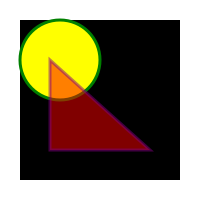

Елизавета Каторгина.
Елизавета Каторгина
- то, что понимает браузер
- совокупность всего того, что мы делаем и чем при этом пользуется, для того, чтобы браузер нас понимал.
— прототипно-ориентированный сценарный язык программирования. Является реализацией языка ECMAScript. JS поддерживаемый сейчас большинством браузеров, работает на ES5.
Smarty<html><?php include 'templates/head.php' ?><body><?php include 'templates/header.php' ?><?php include 'templates/content.php' ?><?php include 'templates/footer.php' ?></body></html>
{if $isRoot}<h1>Главная страница</h1>{/if}<ul>{foreach from=$list item=item}<li>{$item}</li>{/foreach}</ul>
Mustache{"name": "Lisa","profession": "frontend-developer","city": "Moscow"}
<dl><dt>Имф</dt><dd>{{name}}</dd><dt>Профессия</dt><dd>{{profession}}</dd><dt>Город</dt><dd>{{city}}</dd></dl>
HTML%.container%h1 Заголовок%h2 Подзоголовок%p.textТекст
<div class="container"><h1>Заголовок</h1><h2>Подаголовок</h2><p class="text">Текст</p></div>
+b.b-cat+e.neck+e.body+e.arm._left+e.arm._right+e.leg+e.tail+e.butt+e.ear._left+e.ear._right+e.head+e.eye._left+e.eye._right
<div class="b-cat"><div class="b-cat__neck"></div><div class="b-cat__body"></div><div class="b-cat__arm b-cat__arm_left"></div><div class="b-cat__arm b-cat__arm_right"></div><div class="b-cat__leg"></div><div class="b-cat__tail"></div><div class="b-cat__butt"></div><div class="b-cat__ear b-cat__ear_left"></div><div class="b-cat__ear b-cat__ear_right"></div><div class="b-cat__head"><div class="b-cat__eye b-cat__eye_left"></div><div class="b-cat__eye b-cat__eye_right"></div></div></div>
PostCss берет CSS и превращает в вид данных, которые можно изменять с помощью Яваскрипт. Основанные на Яваскрипт плагины, позволяют изменять код. PostCss сам по себе ничего не изменяет, он всего лишь прокладывает путь для плагинов, которые делают изменения и траснформации для которого они созданы.
Плагины PostCss, могут вести себя как препроцессоры: могут оптимизировать и добавлять префиксы в код, могут добавлять синтаксис из будущих спецификаций, могут выполнять проверку, могут производить переменные и логику, можно создавать сетки...этот список очень длинный и разнообразный.
ul.menu {width: 100%;background: #fff;li {display: inline-block;margin: 0 20px;&:last-child {margin-left: 0;}}}
ul.menu {width: 100%;background: #fff;}ul.menu li {display: inline-block;margin: 0 20px;}ul.menu li:last-child {margin-left: 0;}
.menu {width: 100%;background: #fff;&__item {display: inline-block;margin: 0 20px;&_last {margin-left: 0;}}}
.menu {width: 100%;background: #fff;}.menu__item {display: inline-block;margin: 0 20px;}.menu__item_last {margin-left: 0;}
@yellow: #ffc000;@size: 200px;.round(@size) {border-radius: 50%;width: @size;height: @size;}.block1 {background: @yellow;.round(@size)}.block2 {background: @yellow + 20;.round(@size*2)}
.block1 {background: #ffc000;border-radius: 50%;width: 200px;height: 200px;}.block2 {background: #fff214;border-radius: 50%;width: 400px;height: 400px;}
.mixin(@variable) {& when (@variable = 1) {width: 100px;}& when not (@variable = 1) {height: 100px;}}.class-test1 {.mixin(1)}.mixin(1);}.class-test2 {.mixin(2);}
.class-test1 {width: 100px;}.class-test2 {height: 100px;}
@list: 10px, 100px, 1000px;.generator(@index: 1) when (@index <= length(@list)) {@value: extract(@list, @index);.width-@{index} {width: @value;}.generator(@index+1);}.generator();
.width-1 {width: 10px;}.width-2 {width: 100px;}.width-3 {width: 1000px;}
gulp-less, gulp-autoprefixer, gulp-concat
Homebrew - http://brew.sh/$ brew install node$ npm install gulp
$ npm install gulp-less
gulpfile.js
var gulp = require('gulp');var less = require('gulp-less');var path = require('path');gulp.task('less', function () {return gulp.src('./css/blocks/**/*.less').pipe(less({paths: [ path.join(__dirname, 'less', 'includes') ]})).pipe(gulp.dest('./css'));});
$ gulp less
css<svg width="200" height="200"><rect x="20" y="20" width="160" height="160" /><circle cx="60" cy="60" r="40" stroke="green" stroke-width="3" fill="yellow" /><polygon points="50,60 150,150 50,150" /></svg>
svg {border: 1px solid;}polygon {fill: red;stroke: purple;stroke-width: 3;opacity: 0.5;}
<div class="morph"></div>
.morph {width: 100px;height: 100px;background: black;border-radius: 0;opacity: 1;transition: border-radius 0.5s linear, background 0.5s 0.5s linear, opacity 0.5s 1s ease;}.morph:hover {border-radius: 50%;background: red;opacity: 0.5;}
<div class="cir"></div>
.cir {width: 100px;height: 100px;background: green;border-radius: 50%;position: relative;-webkit-animation: move 3s infinite;}@-webkit-keyframes move {0% {left:0; transform: scale(1)}50% {left: 200px; transform: scale(0)}100% {left: 0; transform: scale(1)}}
<svg width="500" height="100"><circle id="orange-circle" r="30" cx="50" cy="50" fill="orange" /><animatexlink:href="#orange-circle"attributeName="cx"from="50"to="450"dur="1s"begin="click + 1s"fill="remove"repeatCount="3"/></svg>
<svg width="300" height="300" viewBox="0 0 300 300" style="position: absolute; bottom: 0; right: 0"><path id="motionPath" fill="none" stroke="#000000" stroke-miterlimit="10" d="M40 155c-23-84 72-29 110 0 40 33 120 59 110 0-18-112-204 58-220 0z"/><circle id="circle" r="10" cx="0" cy="0" fill="tomato" /><animateMotion xlink:href="#circle" dur="5s" begin="0s" fill="freeze" repeatCount="indefinite"><mpath xlink:href="#motionPath" /></animateMotion></svg>
Snap.svg — http://snapsvg.io
<svg id="svg" width="300" height="300" ></svg>
var s = Snap("#svg");var circle = s.circle(150, 150, 100);circle.attr({fill: "#bada55",stroke: "#000",strokeWidth: 5});circle.animate({r: 50}, 1000);
JQuery .animate()
$(function() {$('.jq-anim').on('click', function() {$(this).animate({left: 200}, 1000, "linear", function() {$(this).animate({left: 0}, 1000);});});})
GSAP(Greensock Animation Platform)
TweenMax.to( $('#bg1'), 2, {css: {background-position: '-300px'}} );
— распределённая система управления версиями
Команды, которых часто достаточно:
clone, status, checkout, add, commit, pull, push, merge, rebase
GitHub
gulp.selector {display: -webkit-flex;display: -ms-flexbox;display: flex;-webkit-justify-content: space-between;-ms-flex-pack: justify;justify-content: space-between;}
.pipe(autoprefixer({browsers: ['last 2 versions']}))
<!--[if lte IE 9]><link href="ie.css" type="text/css" rel="stylesheet"><![endif]--><!--[if IE 8]><link href="ie8.css" type="text/css" rel="stylesheet"><![endif]-->
Graceful degradation, Progressive Enhancement.
Modernizr.js (https://modernizr.com/)
Google Chrome 46.0
<html class="no-touch cssanimations csstransforms csstransforms3d csstransitions mediaqueries">
IE 8
<html class="no-touch no-cssanimations no-csstransforms no-csstransforms3d no-csstransitions
no-mediaqueries">
Утройства с разными рамероми и разрешениями экранов.
<meta name="viewport" content="width=device-width">
Media Queries.
@media screen and (max-width: 768px) and (max-device-width: 1024px) and (orientation: portrait) {/* tablet styles */}@media (-webkit-min-device-pixel-ratio: 2), (min-resolution: 192dpi) {/* retina styles */}
Ссылки
Frontender Magazine — http://frontender.info/Эта презентация создана с помощью Shower HTML presentation engine Вадима Макеева — https://github.com/shower/shower
Мир фронтенда — бегун на костылях, но бегун быстрый.